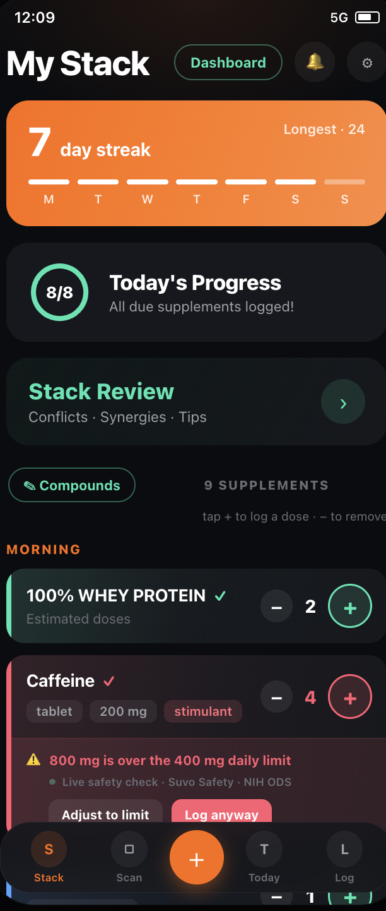

Deine Supplements mit Suvo verfolgen
Suvo ist ein kostenloser Supplement-Tracker für iPhone und Android. Die App hilft dir, deine Routine und deinen Vorrat im Blick zu behalten und mögliche Wechselwirkungen zu verstehen.
Was Suvo kann
- Den Restvorrat verfolgen, nachdem du die Portionen pro Packung eingegeben hast. Suvo markiert knappe Vorräte und kann optional an den Nachkauf erinnern.
- Supplements per Barcode, Etikettfoto oder Namenssuche hinzufügen.
- Mögliche Wechselwirkungen, Timing-Konflikte und kombinierte Nährstoffmengen in deinem Stack prüfen.
- Deine Routine protokollieren und Erinnerungen für deinen Zeitplan wählen.
So funktionieren Vorrat und Nachkauf
- Füge ein Supplement hinzu und gib die Portionen pro Packung ein.
- Protokolliere deine Routine in Suvo. Die App zeigt den Restvorrat und markiert knappe Vorräte.
- Aktiviere Nachkauf-Benachrichtigungen, wenn du erinnert werden möchtest. Aktualisiere deinen Vorrat nach dem Nachkauf.

So erklärt Suvo Hinweise
Bei unterstützten Hinweisen zeigt Suvo den Befund, die Regel und die Quelle. Suvo kann zum Beispiel einen Timing-Konflikt zwischen Eisen und Calcium markieren und auf die Quelle verweisen. Mehr zur NIH-Quelle. Zur Quellenbibliothek.
Wichtig zu wissen
Die Vorratsanzeige hängt von deinen Angaben und protokollierten Einnahmen ab. Nachkauf-Benachrichtigungen sind optional und hängen von den Einstellungen und der Geräteberechtigung ab. Suvo prüft nicht jede mögliche Wechselwirkung. Die App dient der Information und ersetzt keine medizinische Beratung. Frage medizinisches Fachpersonal zu deinen Supplements, insbesondere wenn du Medikamente einnimmst.
Preis und Downloads
Suvo ist kostenlos, ohne Werbung und ohne Paywall. Die Finanzierung erfolgt über Affiliate-Links, wenn du ein bereits ausgewähltes Produkt kaufst. Partnerhinweis.